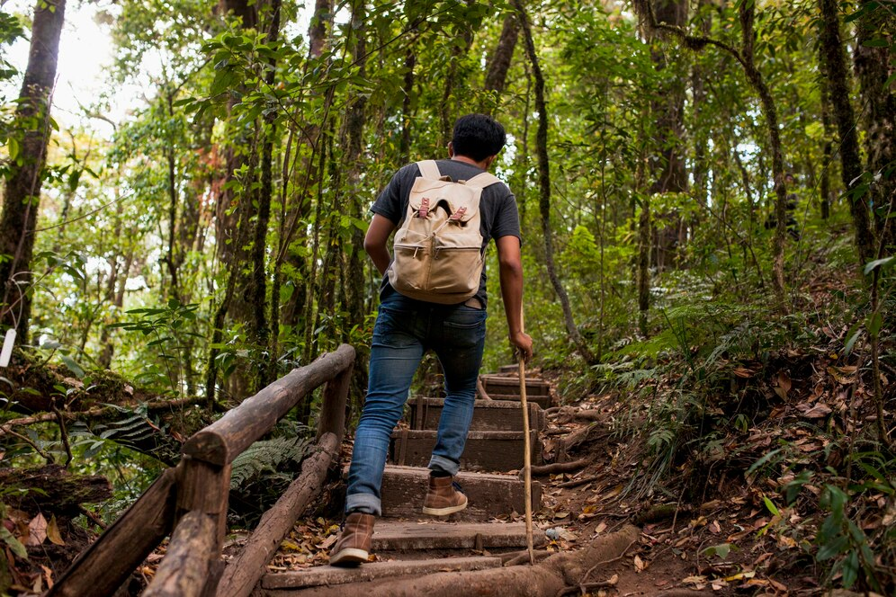

About Me
About general facts, I am 19 years old, I study systems engineering and I this is my fourth semester. Now, talking about the reason I chose this major, It can be resumed in three words "I love it". I think that technology can lead society to a better world, also that it can help everyone to have a easier and happier life (I'm sure we all love to see memes about news instead of reading them on a newspaper). Secondly, in the future, I want to focus in Artificial Intelligence field. I think that this new "tool" is going to help our lives in a way that we could'nt imagine. In conclsuion, I want to be part of the future.
Skills
- Python
- Java
- C / C++
Interests
- AI
- Software Development
- Big Tech
Projects
Visitas Ecológicas
El proyecto de la compañía 'Visitas Ecológicas' busca crear una aplicación web para facilitar a los ciudadanos el acceso a los 56 espacios protegidos de Colombia, que incluyen parques naturales y santuarios de flora y fauna. La app se encargaría de la organización completa del viaje, desde las reservas y pagos hasta el transporte y la logística, además de ofrecer un calendario de visitas adaptado a las condiciones climáticas y de disponibilidad de cada parque. La plataforma estaría diseñada para proporcionar una amplia gama de detalles sobre cada visita: parque específico, actividades disponibles, duración, nivel de dificultad, equipo necesario y restricciones, todo acompañado por un guía experto.
Ver MásParranderos
El proyecto de la compañía 'Parranderos busca crear una aplicación web para facilitar el acceso a la informacion sobre los bares y los bebedores de Colombia, que incluyen bares frecuentados, bebedores, y tipos de bebida servidas. La app se encargaría de la organización completa de la informacion. La app ofrece la posibilidad de filtrar y consultas los distintos tipos de bebedores, segun su presupuesto. Además, permite la filtracion de datos avanzada como buscar que bebedores frecuentan cuales bares dependeiendos de unas condiciones.
Ver MásContact Me
Feel free to contact me at any time, suscribe!!!